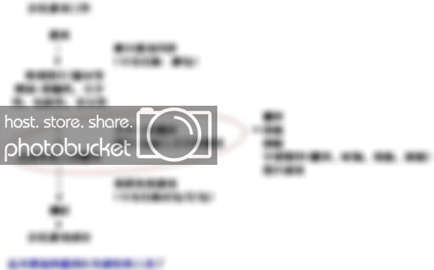
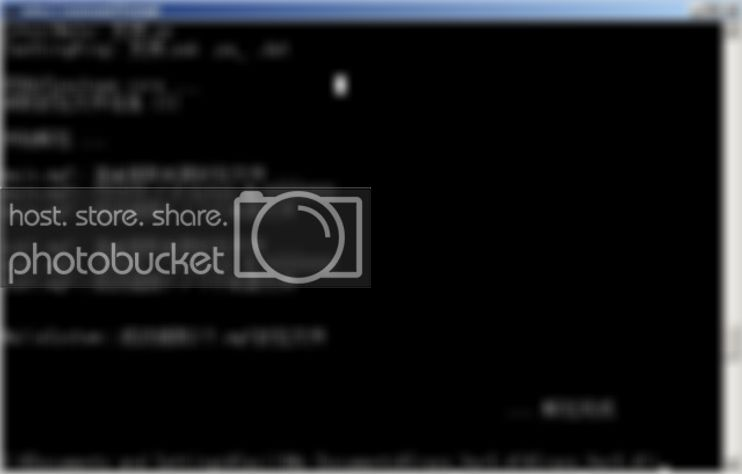
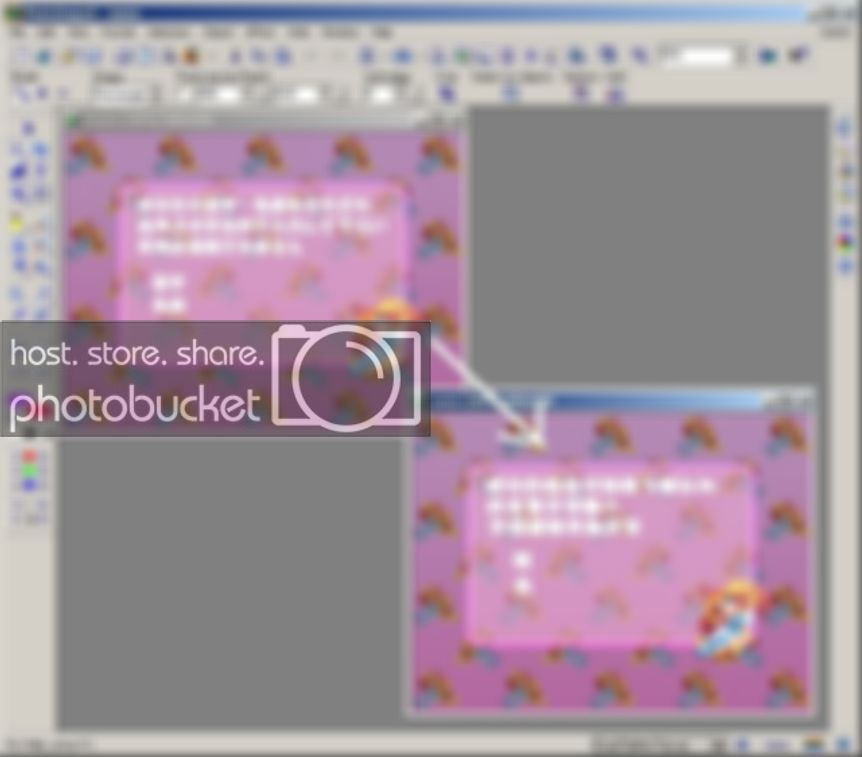
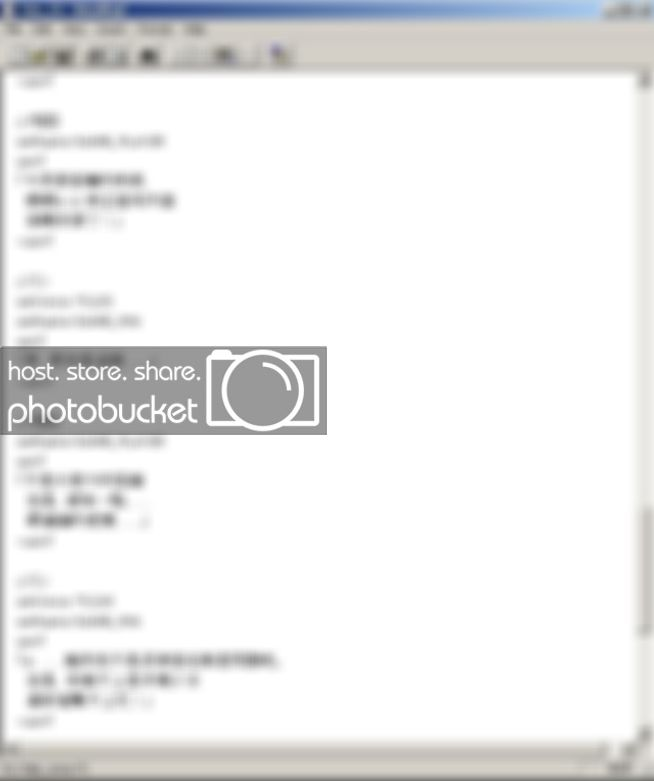
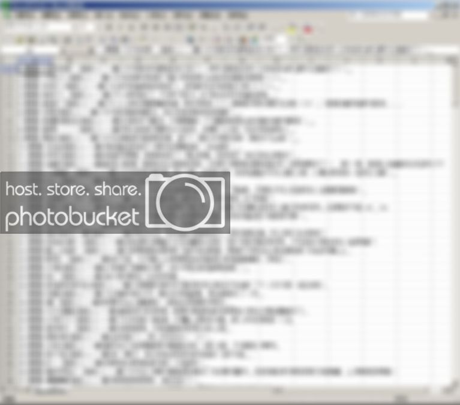

我想交流一下我在汉化游戏时所需要的工具吧. 希望可以帮助以后汉化日游的人吧. 毕竟汉化日游的技术, 透明度不是很高. 去汉化游戏的组织问的话没有回应, 去汉化软件的组织好了, 不懂的那些人只说加了壳自己解吧(一个翻译不是连解包/封包也懂哦…). 所以我希望把这次汉化用的东西, 给大家参考好了. 留给希望加入翻译个行列的人.
1. 首先需要的是解包工具. 有了解包工具就可以抓到游戏里的资源修改.
现时中文的解包工具, 我找到了二款
A. Gameviewer
这个软件好处是简单方便, 不过我觉得缺点是对应的游戏是少了一点. 希望作者prefetchnta将来可以对应更多游戏吧. 个人就非常喜欢美少女梦工场的对应了XD

B. Crass
这个软件对应游戏非常多, 不过我觉得美中不足的是没有Gameviewer 那么方便. 毕竟用Dos
指令不是每个人很清楚. 就连我解开游戏的时候多次出现错误…所以希望作者汉公对以后的版本更加User friend 就好了
C. ExtractData
日本的解包器, 本人刚才试了一下, 可惜对应游戏好像很少…….
D. Susie
这个日本制成的小功具加了Plugin 后, 就可解出很多东西出来. 非常厉害.
现在我知道Alicesoft, 吉利吉利, To Heart, Tear to Tear等等(真的很多)制成的东西可以解出来
2. 解开后就是要修改资源了, 修改资源会用上什么东西. 就是文件修改软件和改图软件等等了
改图软件的话, 本人就喜欢用上photoimpact, 不过其它的人会选上更强力的软件photoshop 吧. 不过条条大道通罗马, 自己喜欢什么修图软件就选用自己喜欢的
而修改文字的软件, 到现时我会用 notepad, wordpad, ultraedit winword, excel 这几个个软件
notepad, wordpad 可存档成unicode, ansi 等, 占用内存很少. 方便修改
winword, excel 对于我来说只是繁/简上的转换, 来计算脚本有多少字数吧了
ultraedit 功能强大, 有些游戏需要用上hex 修改的话. 这个软件就非常方便了

WQSG 16进文本导出器
这个工具可以将16进文本hex 的文本导出, 再把导出的文书翻译后导入本完来的文本.
这个工具比起ultraedit 的hex 修改功能更有效
字幕软件 Cysub 免费软件, 对应繁/简中文, 英文
有些时候, 游戏里的动画都会有一些歌. 所以有时候动画可以加上字幕帮助别人了解内容
(这个工作跟动画字幕组的工作一样, 如想学习的话很多字幕组都有教学).
P.S 不过汉化游戏却没有教学 OTL
3. 翻译的时候需要的是字典. 本人现时用上的有
A. 快译通中英日空中学习字典机 MD201 (内置繁/简对应)
B. 日本成语漫画多本. (有时候日文的成语不一定有中文成语)
C. 日本Yahoo 找寻器, Google 找寻器 (有时候很多字不一定可以查得到的, 所以要用找寻器来找相关的字)
D. 日本Yahoo里的字典(多数是用来查古语)
E. 厚厚的日中大字典
其实这些只是一个汉化日游中段工作时最基本的工具要求了, 如果你又不懂日语而对编程等有相当有认识的话. 可选择成为汉化日游的破解者, 文章参考:
http://bbs.sumisora.net/read.php?tid=209302. 现时这两方面也缺人, 自己喜欢那条路就选那一条吧
破解者: 要求知识比较多, 不断烦躁的追踪, 分析
翻译: 要求知识比较小, 不过绝对要有根性, 毕竟一个日游最少有30万以上的文字要求翻译.
现时我只想到这里, 各大大还有什么好东西就说出来吧
[ 此贴被美少女夢工場在2007-06-09 10:17重新编辑 ]